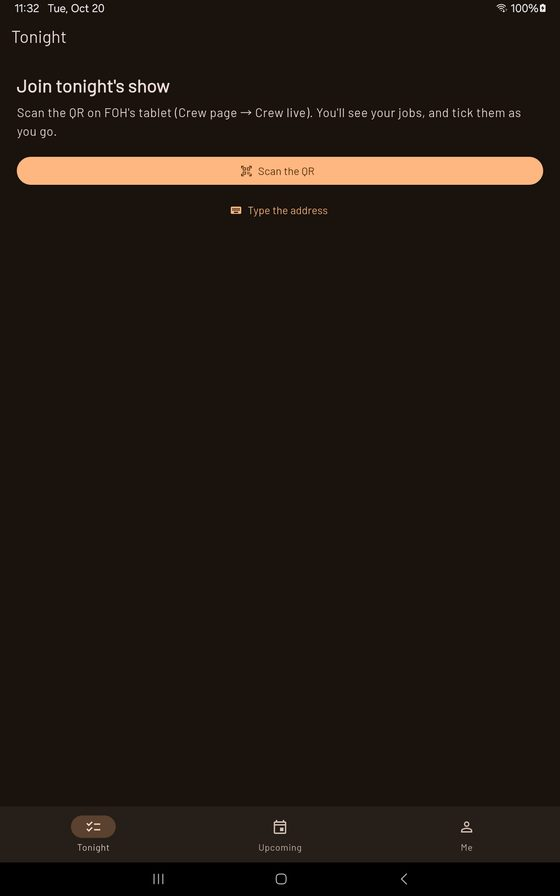

2ndRodeo (crew phones)

2ndRodeo is the crew's free phone app. No account.
Joining tonight's show
On FOH's tablet: Crew page → Show QR. On the phone, on the same Wi-Fi: Scan the QR (or Type the address written under it). The first time it asks your name and phone so FOH can see who's in; you're added to the crew if you weren't.
During the night
- Tonight: every changeover, one line each, the next one lit.
- In a changeover: only your jobs, big lines. Tap to tick; long-press for a note, "Can't do it", and a small map of where the piece goes (with the band's spike colour).
- Done jobs drop to the bottom crossed out; tap one to bring it back.
- The out shows the same way at the end of the night.
Bookings
A booking text from FOH opens 2ndRodeo on the booking: I'm in or Can't make it — FOH hears at once, and you can change your answer. Booked shows sit under Upcoming, and on the night the phone joins by itself. Your call time comes with a reminder half an hour before (Me → Call reminder to turn it off).